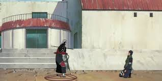
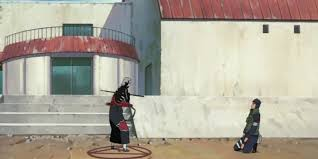

This website is
dedicated to the Akatsuki.
dedicated to the Akatsuki.
Their members are Itachi, Kisame, Deidara, Zetsu, Hidan, Kakuzu, Konan,
Sasori, Orochimaru, Tobi, and Nagato
Sasori, Orochimaru, Tobi, and Nagato

 
